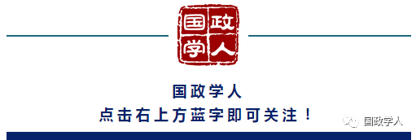

收录于合集

下载方式见底部
以钓鱼岛为视角透视新中国与日本的关系
刘江永
清华大学国际关系研究院
摘要 ：1949年新中国成立以来的中日关系,经历了曲折复杂的历史过程,以钓鱼岛问题为视角观察,大体经历了四个时期,反映出日本执政党内两条不同的对华路线。1972年9月田中角荣执政期间,中日双方搁置钓鱼岛争议,实现了邦交正常化。山口县出身的安倍晋三执政以来,钓鱼岛问题引发中日冲突的潜在危险在增大。中日关系的改善有赖于三个层次的努力:一是以可持续安全观为导向,妥善处理钓鱼岛等敏感问题;二是以海洋事务对话磋商为平台不断推进对话协商与合作,防止事态恶化;三是以澄清钓鱼岛归属真相的对话交流为基础,纠正日方的系统性错觉,促使两国民间感情改善。
关键词 ：中日关系; 钓鱼岛; 可持续安全; 系统性错觉;
“一带一路”建设中的东亚安全与合作机制重构

翟新 刘城晨
上海交通大学国际与公共事务学院
摘要 ：冷战后一直困扰东亚的安全与合作形势随该地域安全保障上的二元格局的凝固化而越发复杂,这在对“一带一路”建设造成阻碍和牵制的同时,也给予了中国借助“一带一路”的影响重构地域安全与合作机制的机遇。所以在目标、框架、功能、机构、原则上使东亚安全与合作机制改变成更切合时代潮流,并与“一带一路”相得益彰的新机制,应该说是消除域内安全与合作问题根源的最有效路径。
关键词 ：“一带一路”; 东亚安全与合作机制; 平衡战略; 国际秩序构建; 中国发展道路;
试论印日“特殊的战略和全球伙伴关系”及其对中国的影响

宋海洋 贾海涛
暨南大学国际关系学院暨南大学中印比较研究所
摘要 ：莫迪政府上台以来,在政治、经济、军事等层面采取多种举措发展印日关系,印日关系被大幅度提升至“特殊的战略和全球伙伴关系”。印日关系强化的背后有多重驱动力,既有双方在战略、经济上的相互借重,也有双方战略目标的一致性;既有双方内在价值观层面的相近,也有外在因素的推动。尽管印日同盟在短期内难以形成,但印日关系的强化对中国的安全环境将产生深远的影响,中国在东西两线将面临巨大的战略压力,在印度洋地区的战略利益拓展将受到挑战,在南海和东海的权益也将受到威胁。面对印日关系强化所导致的复杂周边安全环境,中国应理性看待亚太地区国际关系的波动,现实地处理与周边国家的关系,采取外交、经济、军事以及文化等多种手段来加以应对。
关键词 ：莫迪; 安倍; 亚太再平衡; 印太地区; 民主安全菱形;
特朗普当选后东亚区域经济合作展望

宋志勇
商务部国际贸易经济合作研究院亚洲研究所中华日本经济学会
摘要 ：2016年全球最大的“黑天鹅”事件就是特朗普当选美国总统,特别是其正式签署退出TPP后,对东亚已经或正在谈判的双边或多边自贸协定都将产生重要影响。由于东亚区域经济合作发展进程一直受到各国的关注,特朗普当选后的政策走向必然对东亚区域经济合作产生影响。因此,我们需要认真分析特朗普的政策走向,看清形势,把握机遇,采取对策应对可能面临的挑战。
关键词 ：东亚; 区域经济; 特朗普; 合作; TPP;
中国能源安全与中俄能源合作

陈宪良
哈尔滨师范大学华东师范大学
摘要 ：能源是一个国家经济持续发展的重要保障。中国作为世界上最大的发展中国家和最大的能源消费与进口国,能否确保稳定的能源供应已经成为国家安全的一个战略性问题。俄罗斯作为一个能源生产和出口大国与中国有着天然的地缘优势,对中国确保能源安全具有重要意义。近年来,中俄两国在化石能源领域的合作取得了一定的进展,但也存在着诸多问题,促进两国在能源领域的合作无论对中国确保能源安全,还是对俄罗斯的经济发展均具有重要意义。
关键词 ：中国; 俄罗斯; 能源合作; 石油; 天然气;
**
**
中国东北地区与俄远东地区交通运输网络城市群空间经济联系
郭连成 周瑜 马斌
中国亚洲太平洋学会中国新兴经济体研究会辽宁省人文社会科学重点研究基地东北财经大学区域经济一体化与上海合作组织研究中心东北财经大学国际经济贸易学院南开大学
摘要 ：以2009年中俄两国共同出台的《中华人民共和国东北地区与俄罗斯联邦远东及东西伯利亚地区合作规划纲要(2009~2018年)》为标志,中俄两国两地区的经济合作关系快速升温。在此背景下,深入分析研究两地区交通运输网络与城市群空间经济联系问题,对于推进两国合作规划纲要的实施、深化两地区的经济合作,具有特殊意义。本文以新经济地理学理论为基础,利用SWOT分析法和引力模型,深入分析中国东北地区与俄罗斯远东地区的区位特征和地缘优势;两地区交通运输网络的形成与交通运输合作;边界效应、交通运输网络与城市群空间经济联系;交通运输网络对两地区城市群空间经济联系强度的影响,从而揭示两地区交通运输网络发展与城市群空间经济联系的密切相关性。
关键词 ：空间经济联系; 交通运输网络; 相关性; 中国东北; 俄罗斯远东;
中美双边投资协定谈判中的冲突与趋同

项卫星 张赛赛
吉林大学经济学院
摘要 ：本文认为,历时八年的中美双边投资协定谈判(BIT)之所以未能在奥巴马总统任期内完成,主要是因为双方在核心利益诉求上存在的冲突。这种冲突主要集中在国有企业、投资者和东道国争端解决机制、知识产权保护及劳工和环保等四个条款。这种冲突体现了两国在规则制定上的分歧。而导致这种冲突的主要原因,则包括不同的制度性因素、对国家安全因素的考量、全球经济格局中的大国竞争以及国际经济规则重塑中的规则之争。基于目前中美两国之间紧密的经济相互依赖关系,特别是中美双边投资拥有巨大的增长空间,中美BIT谈判具备了从冲突走向趋同的基础。在走向趋同的过程中,中国应该重视对美方的要价及其政策决策过程的分析、双方都应该妥善对待“国家安全审查”这一问题、坚持以“共同但有区别”这一理念制定BIT规则以及积极推进中美“新型大国关系”的构建。
日印孟艾高铁合作的动因、影响和前景分析

施张兵 胡礼忠
上海外国语大学国际关系与公共事务学院
摘要 ：日印两国同为中国重要邻国,与中国存在领土争议问题。当前中日两国都正大力推行高铁外交,印度首条高铁选择日本新干线系统受到世人的瞩目。本文探讨了日印孟艾高铁合作的动因及其对中日印三国的影响,并在此基础上对日印孟艾高铁合作的前景进行了讨论。综合运用新制度主义、地缘政治经济学的理论分析方法,从多维度角度分析日印孟艾高铁合作的战略性价值,而不仅仅局限于对日印孟艾高铁合作的经济效应进行分析。孟艾高铁采用日本新干线系统,是日印两国关系不断深化、经济利益考量、安倍经济学、孟艾高铁盈利预期高和中国因素等多重因素叠加的结果。日印孟艾高铁合作促使两国关系上升到新的维度,使新干线系统在印度站稳了脚跟,给中国高铁外交增添了阻力。日元继续贬值可能性,印度实施高铁平衡外交,印度国内恐怖主义和征地困难等问题使日印孟艾高铁合作前景不明朗。中国应加强高铁核心技术的研发,学习新干线外交的比较优势,通过实地考察、研讨会等形式提升中国高铁影响力。研究日印孟艾高铁合作的动因、影响与前景对于拓宽日印两国关系的研究领域,跟进日印两国关系的发展动向,以及对中国做好在印度的高铁外交具有重大的学理和现实意义。 更多还原
**
**
日本“泡沫经济”崩溃后僵尸企业处理探究——以产业再生机构为中心

张季风 田正
中国社会科学院日本研究所
摘要 ：“泡沫经济”崩溃后,日本的僵尸企业数量急剧增加,阻碍了产业的升级与转型,降低了日本经济的全要素生产率。2003年,日本政府设立了产业再生机构,采用资产评估、业务重组、财务重建等方式,着手解决僵尸企业问题。经过产业再生机构的援助与重组,企业的经营状况得到改善,营运和偿债能力获得提升。产业再生机构的介入有效强化了企业的主营业务,在行业发展中起到了示范效应,表明政府干预有利于弥补市场失灵的缺陷。中国应吸收日本产业再生机构的有益经验,加强东亚地区间协作,化解僵尸企业问题。 更多还原
关键词 ：日本; 产业再生机构; 僵尸企业; “泡沫经济”; 业务重组; 不良债权; 财务困境;
日本新自由主义城市政策解析

尹小平 孙小明
吉林大学东北亚研究院
摘要 ：20世纪80年代以来,与新自由主义的全球化发展相伴,日本制定和实施了具有浓厚新自由主义色彩的城市政策,主要包括通过构建“城市重构联盟”1,调整城市治理机制;放松城市管制,强调效率优先,引导民营企业参与城市建设投资;改革社会福利制度等。本文通过分析认为,日本新自由主义城市政策的核心,就是强调在城市的开发建设中要减少政府干预、放松管制,给资本和市场松绑,更多地为自由市场力量的发挥创造空间。 更多还原
关键词 ：日本; 古典自由主义; 新自由主义; 城市政策; 城市治理机制; 城市管制; 效率优先; 民间资本; 城市开发建设投资; 政府干预;
获取方式：
公众号后台（聊天页面）发送“ 东北亚论坛 ”自动获取！
筛选：晞哲
编辑：维君
声 明
本文由国政学人首发编辑，分享目的是方便广大学人进行学术研究，促进学术的传播和交流，不做任何商业用途。如有任何权利问题，请直接与我们联系。
上划拖动查看 ↑↑↑
“国政学人”微信公众平台立足于政治学、国际政治与国际关系等专业领域，系统更新最新核心期刊与经典著作，兼顾社科学术研究方法和论文写作技巧的普及。“我们既生产学术，又做学术的搬运工。”“国政学人”致力于打造广大学人的掌上图书馆与高端学术传播平台，立志为中国国际政治学的传播与发展贡献自己的一份力量。
如果您有佳作或批评建议，请编辑内容发送至guozhengxueren@163.com, 欢迎来信与投稿！请动动手指分享到您身边的学术群、朋友圈，让国政学人惠及更多的朋友，